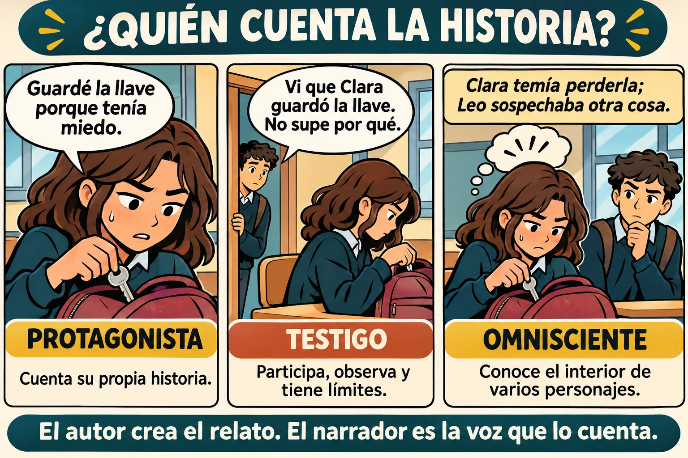
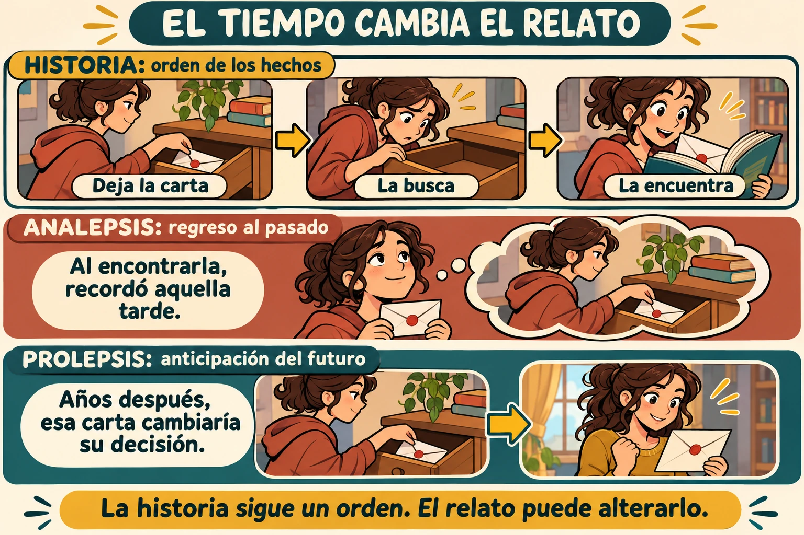
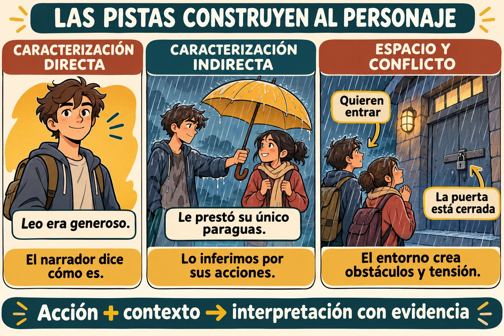

TÉCNICO PROFESIONAL: 2 SUR 1147 – FONOS (71) 2615416 · 2615410
BÁSICA y LICEO: 11 ORIENTE 1751 – FONOS (71) 2615454 · 2615457
www.salesianostalca.cl – cest@salesianostalca.cl · TALCA - REGIÓN DEL MAULE - CHILE
Lengua y Literatura · 2.º medio HC · Prof. Francisco Javier Núñez Valenzuela
Quién cuenta y cómo se construye un relato
Nombre
RUT
Profesor
Francisco Javier Núñez Valenzuela
Curso
N° Lista
Asignatura
Lengua y Literatura
Guía N°
Revisado
Semestre
II
Fecha
Puntaje
Práctica formativa
Objetivo
Interpretar narraciones relacionando la perspectiva del narrador, el tiempo y los indicios con el conflicto, y justificar la interpretación con evidencia textual.
Habilidades
Interpretar, aplicar, justificar y evaluar con evidencia.
INSTRUCCIONES
1. Observen las imágenes y lean los ejemplos resueltos. 2. Apliquen cada explicación en el cuaderno, según su consigna. 3. Respondan individualmente las alternativas y tareas escritas de esta guía. 4. Revisen una respuesta con su pareja y corrijan antes de entregar.
Antes de comenzar
Si dos personas presencian el mismo hecho, ¿por qué pueden contarlo de manera diferente? Escriban una razón en el cuaderno y compártanla en parejas.
Normas de trabajo
Escuchen y fundamenten sus ideas con respeto. Cuiden los materiales y la procedencia de la información. No se permite el uso de celular.
Una pregunta para toda la clase
¿Cómo cambia una historia según quién la cuenta y qué decide mostrar?
Fecha programada: 2026-11-18. Textos y ejercicios originales de CEST. Referencias conceptuales: textos escolares MINEDUC de 1.º y 2.º medio. No es una prueba oficial PAES.
Observamos y comprendemos · ¿Quién cuenta la historia?

El protagonista cuenta su propia historia; el testigo participa como observador.
El omnisciente conoce pensamientos de varios personajes. Autor y narrador cumplen funciones distintas.
Ejemplo resuelto. «Vi que Clara guardó la llave. No supe por qué»: la voz observa y reconoce un límite; funciona como testigo.
Ahora aplica. En parejas, escriban en el cuaderno dos versiones de «Tomás abrió la caja»: una como protagonista y otra como testigo. Subrayen qué sabe cada voz. Tienen 2 minutos.
Escribe una idea o ejemplo aquí y desarrolla la respuesta en tu cuaderno.
Observamos y comprendemos · ¿En qué orden se cuenta?

El tiempo de la historia ordena los acontecimientos; el relato decide cómo presentarlos.
La analepsis vuelve al pasado. La prolepsis anticipa un acontecimiento futuro.
Ejemplo resuelto. «Al encontrarla, recordó aquella tarde» interrumpe el presente para recuperar un hecho anterior: analepsis.
Ahora aplica. Individualmente, escriban en el cuaderno tres hechos en orden. Reescríbanlos comenzando por el último e incorporen un recuerdo. Marquen el salto temporal. Tienen 2 minutos.
Escribe una idea o ejemplo aquí y desarrolla la respuesta en tu cuaderno.
Observamos y comprendemos · ¿Qué revelan las acciones y el entorno?

La caracterización directa dice un rasgo; la indirecta permite inferirlo desde acciones, palabras o gestos.
El espacio puede imponer un obstáculo: entrar es el deseo; la puerta cerrada dificulta cumplirlo.
Ejemplo resuelto. Prestar el único paraguas permite inferir generosidad. La inferencia necesita esa acción como evidencia.
Ahora aplica. En parejas, inventen en el cuaderno una acción que muestre desconfianza sin usar «desconfiado». Añadan un lugar que aumente la tensión y expliquen por qué. Tienen 2 minutos.
Escribe una idea o ejemplo aquí y desarrolla la respuesta en tu cuaderno.
Aplicamos · Definiciones y oraciones
Elige la opción que explica mejor el ejemplo. Puedes consultar las fichas.
1. «Temía hablar; su hermano, lejos de allí, deseaba que lo hiciera». ¿Qué narrador permite conocer ambas interioridades?
A. Omnisciente.
B. Testigo de las dos escenas, sin conocer pensamientos.
C. Objetivo, limitado a registrar movimientos externos.
D. Protagonista que cuenta solo su propia experiencia.
Respuesta: ______
2. «Lo acompañé al puente, pero nunca supe qué pensaba». ¿Qué narrador se reconoce?
A. Protagonista que relata el centro de su propia aventura.
B. Testigo.
C. Omnisciente que conoce los pensamientos de todos.
D. Objetivo que no participa en el mundo de la historia.
Respuesta: ______
3. «Abrí mi carta y decidí partir». Si el relato desarrolla las consecuencias de esa decisión para quien habla, ¿qué narrador predomina?
A. Omnisciente que comunica pensamientos de personajes distantes.
B. Objetivo externo que solo registra conductas observables.
C. Protagonista.
D. Testigo de una decisión que tomó exclusivamente otra persona.
Respuesta: ______
4. «Dejó la carta, miró la puerta y salió». Sin datos de interioridad ni participación de la voz, ¿qué narrador se ejemplifica?
A. Protagonista que cuenta directamente su propia salida.
B. Testigo que expresa su participación en los hechos.
C. Omnisciente que conoce los motivos secretos de todos.
D. Objetivo.
Respuesta: ______
Aplicamos · Definiciones y oraciones
Elige la opción que explica mejor el ejemplo. Puedes consultar las fichas.
5. Mientras espera el bus, un personaje recuerda brevemente una despedida de ayer. ¿Qué recurso aparece?
A. Flashback.
B. Prolepsis extensa que cuenta el futuro completo del personaje.
C. Historia paralela que cambia a otro mundo sin vínculo temporal.
D. Disposición ab ovo que conserva siempre el orden cronológico.
Respuesta: ______
6. «Años después comprendería el valor de esa carta». ¿Qué alteración temporal contiene?
A. Racconto que desarrolla extensamente una experiencia del pasado.
B. Prolepsis.
C. Analepsis que recupera acciones anteriores al presente del relato.
D. Caracterización directa que describe el aspecto físico del personaje.
Respuesta: ______
7. El cuento comienza con la llegada final del viajero y después reconstruye su partida y recorrido. ¿Qué disposición presenta?
A. Ab ovo, porque el primer párrafo coincide con el inicio de la historia.
B. Cronología estricta, porque no retrocede desde el punto de inicio.
C. In extremas res.
D. In medias res, porque toda llegada pertenece a la mitad del viaje.
Respuesta: ______
8. «Era solidaria» y «compartía su comida con quienes no traían almuerzo» caracterizan de modo:
A. Indirecto y directo, porque una acción siempre nombra el rasgo.
B. Físico y físico, porque ambos enunciados describen su apariencia.
C. Omnisciente y objetivo, porque los enunciados clasifican narradores.
D. Directo e indirecto, respectivamente.
Respuesta: ______
Aplicamos · Definiciones y oraciones
Elige la opción que explica mejor el ejemplo. Puedes consultar las fichas.
9. «Quería acusar el engaño, pero temía perjudicar a su amiga». ¿Qué tensión se manifiesta?
A. Un conflicto interno.
B. Un desenlace completamente resuelto por la narradora.
C. Un cambio físico del espacio donde ocurre la acción.
D. Una oposición externa entre dos grupos ya enfrentados.
Respuesta: ______
10. «El puente cedió; por eso regresaron». ¿Qué relación introduce el conector?
A. Reformulación que sustituye una expresión por su equivalente.
B. Consecuencia.
C. Concesión que mantiene el regreso pese a un obstáculo contrario.
D. Contraste que opone el regreso a una acción sin relación causal.
Respuesta: ______
11. «La carta era escueta: solo decía “vuelve”». ¿Qué reemplazo conserva mejor el sentido de escueta?
A. Afectuosa porque desarrolla extensamente los sentimientos.
B. Antigua porque describe hechos de muchos años atrás.
C. Breve.
D. Imposible de entender por estar escrita en un idioma desconocido.
Respuesta: ______
12. «La viajera entró. Ella dejó su bolso». ¿Qué función cumple ella?
A. Introducir necesariamente a una segunda persona sin nombrarla.
B. Sustituir el bolso porque aparece en la misma oración.
C. Señalar el lugar del viaje mediante un conector temporal.
D. Retomar a la viajera.
Respuesta: ______
Leemos · La llave que no abría
Cuento
Cuando la mujer dejó la llave sobre mi mesón, reconocí el hilo azul atado a su extremo. Mi padre hacía ese nudo para no confundir las llaves del taller con las de la casa. Yo llevaba doce años atendiendo la ferretería y nunca había visto entrar a esa mujer. Ella pidió una copia. Antes de encender la máquina, pregunté qué puerta abría. «Ninguna, por ahora», respondió.
El hilo me devolvió un recuerdo breve: mi padre, sentado junto a la radio, me enseñaba a distinguir dos llaves idénticas. «Lo importante no siempre está en los dientes», decía. Volví al mesón y noté que la mujer miraba la antigua foto del taller. Le pregunté si había conocido a mi padre. Asintió, pero no agregó nada. Supuse que había venido a cobrar una deuda; al comprobar que no llevaba papeles, me avergoncé un poco de mi rapidez para sospechar.
La máquina hizo la copia. Mientras limaba los bordes, la mujer contó que había vivido frente al taller y que, después de una crecida del río, mi padre le había prestado una pieza donde guardar sus muebles. «La puerta ya no existe», explicó. «Mi hermano no pudo despedirse de la casa. Quiero darle algo que podamos conservar los dos». Miré la llave de otro modo: ya no era una herramienta defectuosa, aunque no sirviera para abrir una cerradura.
Le entregué la copia y me negué a cobrar. La mujer dejó de todos modos unas monedas y se fue. Yo guardé la llave original que había quedado por descuido junto a la máquina. Afuera empezaba a llover. Salí hasta la vereda, pero la mujer había doblado la esquina. Cerré la mano sobre el hilo azul y avancé hacia ella. No sabía aún si le hablaría de mi padre o si bastaría con devolverle la llave.
Texto original de Estudia CEST, creado para esta práctica. No corresponde a una prueba oficial.
Subraya un indicio relevante y escribe qué permite comprender.
Aplicamos · La llave que no abría
13. ¿Qué permite clasificar a la voz de este cuento como narrador protagonista?
A. Participa y relata cómo cambia su propia interpretación.
B. Conoce directamente los pensamientos secretos de la visitante.
C. Presenta la escena sin expresar recuerdos ni suposiciones.
D. Observa desde fuera una historia en la que nunca interviene.
Respuesta: ______
14. ¿Qué función cumple el recuerdo del segundo párrafo?
A. Resolver la deuda que el narrador supone antes de escucharla.
B. Vincular el objeto con una enseñanza que adquiere otro sentido.
C. Demostrar que la visitante había robado la llave al padre.
D. Anticipar cómo el hermano utilizará la copia para abrir su casa.
Respuesta: ______
15. ¿Qué cambio experimenta el narrador al escuchar a la visitante?
A. Comprueba que la llave debe repararse para abrir la puerta perdida.
B. Descubre una deuda y decide pagarla mediante dos copias gratuitas.
C. Pasa de sospechar una demanda a reconocer un valor afectivo.
D. Abandona la memoria de su padre para centrarse solo en vender.
Respuesta: ______
16. ¿Qué efecto produce el desenlace?
A. Confirma que el narrador nunca volvió a ver a la visitante.
B. Demuestra que la llave recuperó finalmente su utilidad original.
C. Asegura que el hermano rechazará el recuerdo de la casa perdida.
D. Deja abierta la forma que tomará el encuentro pendiente.
Respuesta: ______
Elige una respuesta y justifícala con una pista de la lectura.
Leemos · La misma esquina
Relatos paralelos
En la ciudad, Inés esperaba a su madre frente a una estación cerrada. Había llegado con una carpeta de documentos para solicitar una beca. Revisó la hora: aún faltaban veinte minutos. Su madre nunca le había contado por qué evitaba ese edificio. Inés conocía solo una frase repetida en casa: allí había aprendido a no esperar demasiado de las puertas cerradas.
Treinta años antes, en la misma esquina, Elena sostenía una carpeta bajo la lluvia. El funcionario había recibido su postulación y luego había señalado un cartel que exigía un certificado imposible de conseguir antes del cierre. Elena pensó en insistir, pero oyó detrás de ella la risa de dos personas y guardó la carpeta. Más tarde diría que el tren no había llegado a tiempo; era una explicación menos difícil que contar su vergüenza.
En la ciudad, Inés vio acercarse a su madre y levantó la mano. «Si falta algo, lo preguntamos juntas», dijo. Elena miró el edificio. No entraron: la oficina de becas se había trasladado a la biblioteca y ambas caminaron hacia allá. Antes de doblar, Elena pidió unos minutos. Se sentó con su hija en un banco y abrió, por primera vez, la carpeta de su propia historia.
Texto original de Estudia CEST, creado para esta práctica. No corresponde a una prueba oficial.
Subraya un indicio relevante y escribe qué permite comprender.
Aplicamos · La misma esquina
17. ¿Qué relación organiza las dos líneas temporales?
A. Dos postulaciones permiten contrastar aislamiento y acompañamiento.
B. Un mismo trámite se repite exactamente y termina con dos rechazos.
C. La hija recuerda una experiencia propia ocurrida treinta años antes.
D. La madre imagina un futuro en que su hija ocupará el cargo del funcionario.
Respuesta: ______
18. ¿Qué información permite afirmar que el narrador sabe más que Inés?
A. Indica la hora que Inés puede consultar antes del encuentro.
B. Conoce la vergüenza y la decisión pasada de Elena.
C. Describe una estación que Inés observa mientras espera.
D. Reproduce una frase que ambas han escuchado en casa.
Respuesta: ______
19. En el cierre, ¿qué significa abrir «la carpeta de su propia historia»?
A. Entregar al antiguo funcionario una nueva postulación completa.
B. Mostrar que los documentos antiguos sirven para el trámite actual.
C. Comenzar a contar una experiencia que había mantenido en reserva.
D. Encontrar los certificados necesarios para obtener la beca de su hija.
Respuesta: ______
20. ¿Qué interpretación del espacio está mejor respaldada?
A. La estación determina que todos los trámites de la familia terminen siempre igual.
B. El traslado de la oficina elimina cualquier necesidad de conversar sobre el pasado.
C. La biblioteca demuestra que las instituciones actuales nunca imponen requisitos.
D. La esquina reúne un obstáculo pasado y la posibilidad de afrontarlo de otro modo.
Respuesta: ______
Elige una respuesta y justifícala con una pista de la lectura.
Leemos · Leer una versión no es conocerlo todo
Artículo informativo
Una narración no entrega el mundo completo: selecciona una voz, un orden y ciertos detalles. Cuando un personaje cuenta que alguien «parecía culpable», informa una percepción. Para convertirla en una conclusión, el lector debe relacionarla con acciones, palabras y antecedentes. Una impresión puede orientar la lectura y también conducir a una equivocación.
Conviene distinguir tres operaciones. Primero, localizar lo explícito: qué se afirma y quién lo dice. Luego, inferir: qué relación permite proponer una explicación. Finalmente, evaluar: si esa explicación considera el conjunto y respeta sus límites. No se trata de adivinar lo que el autor pensó, sino de construir una interpretación que otros puedan examinar en el texto.
Por ejemplo, que una persona guarde una carta y evite mirar a otra permite inferir reserva o inquietud. No basta para asegurar un delito. Si después se explica que la carta contiene una despedida, la hipótesis debe revisarse. Releer no es repetir la primera impresión: es contrastarla con información nueva.
Un resumen conserva las acciones y relaciones centrales sin convertir posibilidades en certezas. Una reseña crítica añade una valoración de la obra y la fundamenta. En ambos casos, pronombres, conectores y párrafos deben permitir seguir los referentes y las ideas. Un texto claro hace visibles las relaciones; no resuelve por el lector todas las ambigüedades que la obra decidió conservar.
Texto original de Estudia CEST, creado para esta práctica. No corresponde a una prueba oficial.
Subraya un indicio relevante y escribe qué permite comprender.
Aplicamos · Leer una versión no es conocerlo todo
21. Según el artículo, ¿qué debe hacerse primero al examinar una afirmación narrativa?
A. Identificar qué se afirma y quién lo dice.
B. Decidir qué intención personal tuvo el autor real.
C. Eliminar las expresiones que puedan resultar ambiguas.
D. Elegir una conclusión antes de reunir antecedentes.
Respuesta: ______
22. ¿Por qué el ejemplo de la carta exige revisar la hipótesis inicial?
A. La primera interpretación debe conservarse aunque surjan datos contrarios.
B. Una información posterior cambia el alcance de los indicios.
C. Todo gesto de inquietud demuestra que se ha cometido un delito.
D. Una carta de despedida impide que el personaje sienta preocupación.
Respuesta: ______
23. ¿Qué diferencia establece el texto entre resumen y reseña crítica?
A. La reseña sustituye las acciones por datos biográficos del autor.
B. El resumen transforma dudas del relato en hechos confirmados.
C. La reseña incorpora una valoración fundamentada de la obra.
D. El resumen agrega opiniones que no necesitan evidencia textual.
Respuesta: ______
24. ¿Qué práctica contradice la propuesta del artículo?
A. Distinguir las palabras del narrador de una afirmación del autor.
B. Usar un conector para aclarar cómo se relacionan dos acciones.
C. Reconocer que una interpretación puede conservar incertidumbre.
D. Mantener una sospecha aunque otros datos la debiliten.
Respuesta: ______
Elige una respuesta y justifícala con una pista de la lectura.
Escribimos y revisamos · Tarea 1
Reescriban, individualmente en este campo, la llegada de la visitante del primer cuento en 4–5 líneas con narrador objetivo. Eviten comunicar pensamientos que no se observen.
Revisión en pareja. ¿El ejemplo cumple la definición? ¿La evidencia respalda la explicación? Señala una mejora y corrige tu respuesta.
Escribimos y revisamos · Tarea 2
Expliquen en 3–4 líneas cómo cambia el significado de la llave. Incluyan una expresión del cuento como evidencia.
Revisión en pareja. ¿El ejemplo cumple la definición? ¿La evidencia respalda la explicación? Señala una mejora y corrige tu respuesta.
Escribimos y revisamos · Tarea 3
Escriban un resumen de «La misma esquina» en 3–4 líneas. Conserven la relación entre las dos historias y usen un conector y una expresión correferencial.
Revisión en pareja. ¿El ejemplo cumple la definición? ¿La evidencia respalda la explicación? Señala una mejora y corrige tu respuesta.
Cierre · Explicar qué cambió
Revisa las alternativas y las tareas escritas antes de entregar. Responde individualmente.
Expliquen un contenido que ahora pueden aplicar y escriban un ejemplo propio.
Citen una pista de las lecturas y expliquen qué conclusión permite sostener.
Señalen una respuesta que revisaron o revisarían y expliquen qué cambiarían y por qué.
Para continuar el repaso hasta el 9 de diciembre: estudiacest.com/paes/nm2/fichas.html. Escoge contenidos que te cueste aplicar y responde sus consignas en el cuaderno.